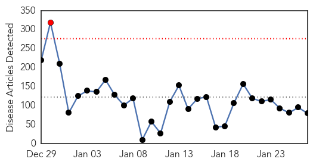

30 Day Trends
Web: 1 alerts, 0 warnings
Twitter: 2 alerts, 0 warnings
953 new deaths (8795 total)
1976 new cases (22057 total)
Top Articles:
- 1.000
- Fighting Ebola from day one
- 1.000
- Ebola is losing it strength in West Africa
- 1.000
- Tide turning in Ebola fight after hard lessons Republican American
- 1.000
- Scientists Ask If Ebola Immunizes As Well As Kills
- 1.000
- Scientists ask if Ebola immunizes as well as kills
- 1.000
- Critical-Care Physician From Canada Fought Ebola From Day One
- 1.000
- Are we starting to see the end of Ebola? Not quite, but we're well on our way
- 1.000
- Scientists ask if Ebola immunises as well as kills
- 1.000
- Is Ebola silently immunising some while killing their neighbours?
- 1.000
- Ebola – is the virus silently immunising as well as brutally killing?
- 0.999
- Liberia's Ebola Prospects: What it Takes to Get to Zero?
- 0.999
- Interview with Dr Rob Fowler
- 0.999
- Scientists ask if Ebola immunises as well as kills
- 0.998
- Has the Ebola Pandemic Been Contained? The Number of Ebola Virus Disease (EVD) Cases in Rapid Decline
- 0.998
- Ebola response: Is the world too late?
- 0.998
- Oxfam calls for Ebola recovery 'Marshall Plan'
- 0.998
- Dramatic decline in Ebola cases reported; West African countries remain 'cautiously optimistic'
- 0.997
- Doctor working in Ebola-hit Liberia says situation is 'improving significantly'
- 0.996
- Case Western researchers awarded NSF grant to develop new method to reduce risk of Ebola virus
- 0.996
- CWRU researcher on the clock to improve early Ebola detection
- 0.995
- Liberia closes centre at epicentre of Ebola outbreak - Africa
- 0.995
- Liberia closes Ebola center at epicenter of outbreak
- 0.994
- After Ebola, WHO to set up contingency fund, develop 'surge capacity'
- 0.994
- Ebola treatment center in Richardson to be dismantled
- 0.994
- Liberia closes Ebola treatment center
- 0.986
- China trains health professional in Ebola control
- 0.986
- Davos: UN launches $1 billion appeal for global Ebola response
- 0.982
- Chinese Women Contribute Greatly to Fight Against Ebola
- 0.980
- After Ebola, World Bank Chief Proposes Global Insurance Program For Future Outbreaks
- 0.980
- Three Dundalk businesses honored by comptroller
- 0.980
- Greater Baltimore Cultural Alliance places its first class of fellows
- 0.980
- New England slammed by 'crippling' storm
- 0.980
- European organic food and beverages market: France hosts world’s largest organic wine show
- 0.980
- Northeast snow disrupts travel plans at BWI
- 0.980
- Consumer advocates call for cheaper auto insurance for low-income residents in Maryland
- 0.980
- Bigger Baltimore boat show reflects rosy industry outlook
- 0.977
- China provides financial and technical support to Ebola control in Ghana
- 0.976
- What comes after Ebola?
- 0.975
- Oxfam calls for recovery Marshall Plan for Ebola victims
- 0.974
- WHO Executive Board appoints Dr Matshidiso Moeti as new Regional Director for Africa
- 0.974
- Liberia close to becoming Ebola-free
- 0.973
- WHO Executive Board appoints Dr Matshidiso Moeti as new Regional Director for Africa
- 0.968
- Guinea's Ebola Numbers May Be Higher Than Reported
- 0.965
- Fewer Ebola cases put potential vaccine at risk
- 0.962
- WHO adopts reforms to repair reputation after bungling Ebola
- 0.947
- Obama Pitches for Finding Ways to Detect Ebola Early
- 0.945
- MetroHealth and other Ebola-designated centers need federal money: editorial
- 0.945
- Additional support from Finland to combat Ebola in West Africa - Sierra Leone
- 0.945
- Sierra Leone News: HRS takes food distribution to Ebola-hit Western Rural « Awoko Newspaper
- 0.944
- Guinea Opposition Leader Says Slow Ebola Action Hurts Investment
Showing top 50 articles...
Top Tweets:
- 0.936
- EBOLAFACT for today would be centered on transmission of Ebola virus
- 0.926
- RT: @EbolaAlert EbolaChat Ebola *will* strike again. This current epidemic is only *one* epidemic. Ebola is found in *many* areas …
- 0.883
- RT: @EbolaAlert EbolaChat As Ebola cases during this *current* epidemic world must *not* follow same complacency.
- 0.837
- RT: @EbolaAlert EbolaChat As Ebola cases during this *current* epidemic decline world must *not* follow same complacency.
- 0.794
- CDC’s Team 5 scores a 10 fighting Ebola in Sierra Leone. Read more: http://t.co/dcaKoy8eN9 CDCinthefield
- 0.767
- Impact of the West African Ebola Virus Disease Outbreak on Foodsecurity http://t.co/VWNCoOXHu7
- 0.738
- CDC’s first and only all-woman Ebola lab team in Sierra Leone set several new records. Read more:http://t.co/c3T6g1Qp8x
- 0.677
- RT: Dr Jide Idris Lagos Health Commissioner discussing Ebola success ht…
- 0.648
- Ebola virus is introduced into a human population when people come in close contact with bodily fluids of infected animals. EBOLAFACT
- 0.629
- Join us for EBOLACHAT today as we discuss "The fate of the Ebola Vaccine As Number of Cases Decline" @biskits_n_gravy
- 0.629
- Join us for EBOLACHAT today as we discuss "The fate of the Ebola Vaccine As Number of Cases Decline" @bakarelawal
- 0.629
- Join us for EBOLACHAT today as we discuss "The fate of the Ebola Vaccine As Number of Cases Decline" @Eboladeeply
- 0.629
- Join us for EBOLACHAT today as we discuss "The fate of the Ebola Vaccine As Number of Cases Decline" @DrGeeONE
- 0.629
- Join us for EBOLACHAT today as we discuss "The fate of the Ebola Vaccine As Number of Cases Decline" @set1958
- 0.629
- Join us for EBOLACHAT today as we discuss "The fate of the Ebola Vaccine As Number of Cases Decline @herbertchitongo
- 0.592
- What implications does the decline in number of Ebola cases mean for the development of a vaccine? EBOLACHAT
- 0.581
- Kenya @ Text ‘Stop Ebola’ to 7979 to donate 20 BOB to the war against Ebola. RT if you will. AfricaAgainstEbola 24AUsummit
- 0.551
- RT: Ebola Epidemic Takes a Toll on Sierra Leone’s Surgeons http://t.co/Qq53Bgp84w
- 0.517
- RT: MT: Celebrating Dr. Shetty from who has been a leader in the response to fight Ebola http…
- 0.515
- SierraLeone. Pratiques funéraires et gestion des cimetières lors d'une épidémie de maladie à virus Ebola http://t.co/5jINV5b3Fn
Web/News Articles
Tweets

Human Impact
Article Locations

Article Confidences